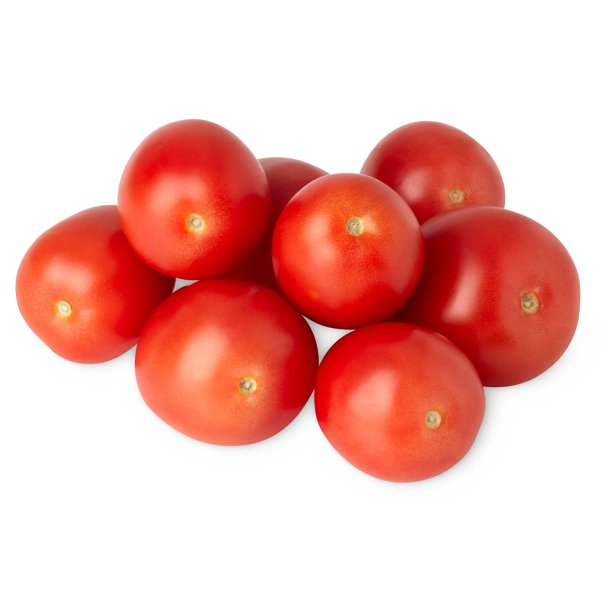
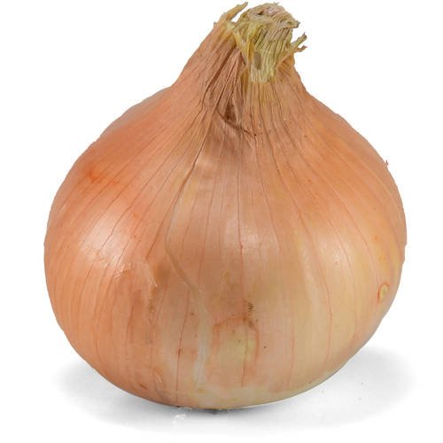
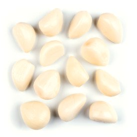
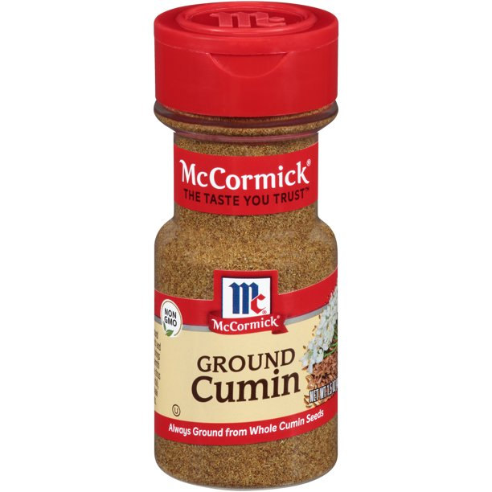
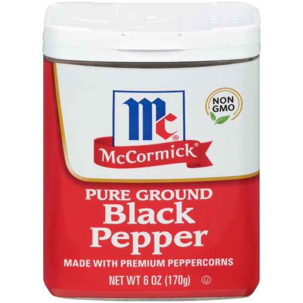
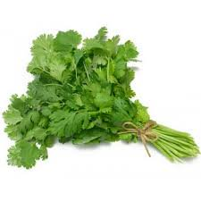
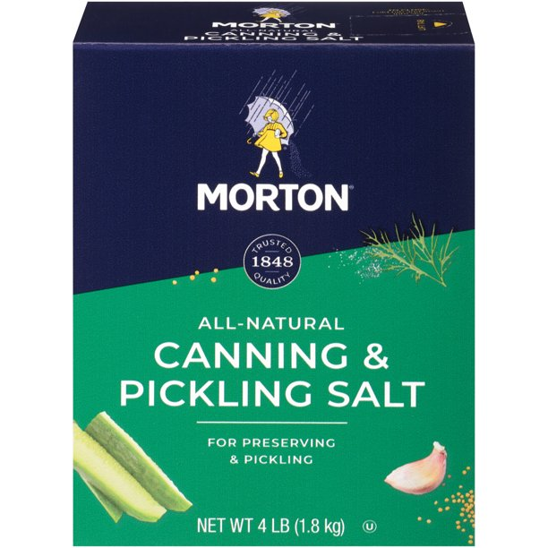
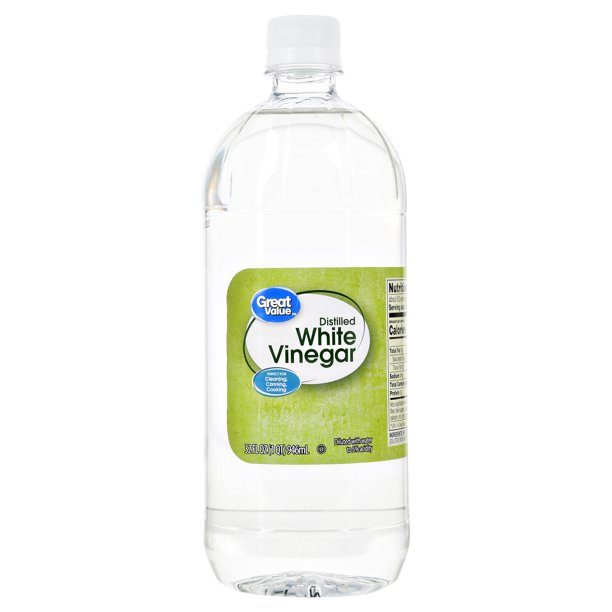
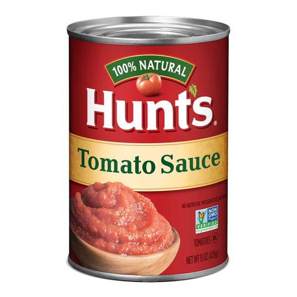
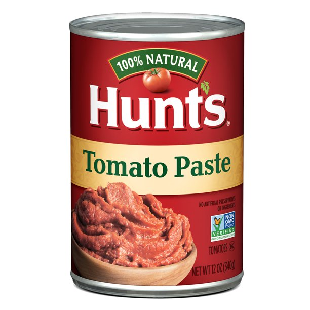

Instructions
- Mix all together.
- Bring to a slow boil for 10 minute.
- Seal in jars and cook in hot water bath for 10 minute.
| Ingredient Name | Amount | Picture of Ingredient |
|---|---|---|
| Roma Tomatoes | 8-10 |  |
| Sweet Onions | 2 |  |
| Green Peppers | 2 | |
| Jalapeno Peppers | 1-2 | |
| Garlic Cloves | 6 |  |
| Cumin | 2 teaspoons |  |
| Pepper | 2 teaspoons |  |
| Cilantro | 1/2 cup |  |
| Canning Salt | 1/8 cup |  |
| Sugar | 1/3 cup | |
| Vinegar | 1/3 cup |  |
| Tomato Sauce | 1-15oz can |  |
| Tomato Paste | 1-12oz can |  |
Instructions
|
||